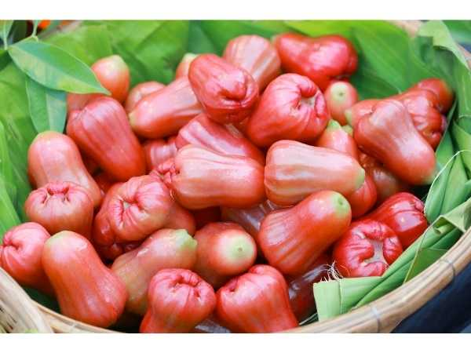

Syzygium samarangense 'Dahai'
Common Names: Dahai Water Apple, Chamba, Thai Wax Apple, Thub Thim Chan
Local Name: Dahai / Chamba (Thai), Neer Sathukudi (Tamil)
Family: Myrtaceae
Origin: Thailand (selected cultivar from Southeast Asian species)
Plant Type: Perennial evergreen tree
Variety: Dahai — premium Thai cultivar with large, deep red-pink fruit
Average Lifespan: 30–50 years
| Growth Habit | Medium-sized spreading tree with dense, rounded canopy |
| Plant Size | 5–12 meters tall; canopy spread 5–8 meters |
| Leaves | Opposite, elliptic-oblong, 12–25 cm long, leathery, glossy dark green |
| Flowers | Creamy-white, 2–3 cm across, borne in clusters on older branches |
| Flower Characteristics | Cauliflorous; numerous prominent stamens; mildly sweet fragrance |
| Fruit | Large bell-shaped, 7–12 cm long, exceptionally crisp and juicy with sweet flavour; larger than common water apple |
| Fruit Color | Deep crimson-red to dark pink with glossy waxy skin |
| Seed Characteristics | Usually seedless or with 1–2 small vestigial seeds |
| Root System | Moderately deep taproot with extensive lateral roots |
| Climate | Tropical; requires warm, humid conditions year-round |
| Temperature Range | 24–35°C ideal; sensitive to cold below 8°C |
| Rainfall Requirement | 1500–2500 mm annually; consistent moisture needed |
| Soil Type | Rich, deep, well-drained loamy soil with high organic matter |
| Soil pH Preference | 5.5–6.5 |
| Sun Requirement | Full sun (6–8 hours daily) |
| Spacing | 6–8 meters between trees |
| Irrigation Method | Drip or micro-sprinkler irrigation; consistent watering critical during fruit development |
| Water Requirement | High; requires regular watering especially during dry periods |
| Can it Grow in Pots? | Possible in very large containers (50+ liters) but fruit quality may reduce |
| Fertilizer Schedule | Every 2–3 months; boost with potassium-rich fertilizer before fruiting |
| Recommended Organic Fertilizers | Vermicompost, well-rotted FYM, seaweed extract, bone meal |
| Pesticide Frequency | Monitor weekly during fruiting; treat as needed |
| Recommended Organic Pesticides | Neem oil, kaolin clay spray, fruit fly traps with methyl eugenol |
| Mulching Practice | Thick organic mulch (8–10 cm) to conserve moisture and regulate soil temperature |
| Training System | Open centre or modified central leader; maintain low canopy for easy harvest |
| Pruning Time | After each harvest cycle; light structural pruning annually |
| How to Prune | Remove water sprouts, dead wood, and inward-growing branches; thin canopy for light penetration |
| Common Pests | Oriental fruit fly, mealybugs, aphids, fruit borers |
| Common Diseases | Anthracnose, sooty mold, Phytophthora root rot, leaf blight |
| Disease Prevention & Remedies | Ensure good drainage, prune for airflow, copper fungicide sprays, remove infected fruit promptly |
| Flowering Months | Can flower 2–3 times per year in tropical climates; main flush March–May |
| Fruiting Season | May–August (main); secondary crop October–December |
| Days to Harvest | 35–50 days from fruit set |
| Harvest Indicators | Fruit reaches full deep red colour, waxy sheen develops, slight softening at base |
| Average Yield per Plant | 60–120 kg per tree per year (mature tree, well-managed) |
| Pollination Type | Self-pollination and insect pollination |
| Pollination Notes | Bees and stingless bees are key pollinators; hand thinning improves fruit size |
| Pollination Details | Self-fertile; cross-pollination with other Syzygium varieties can improve fruit set |
| Propagation by Seeds | Not recommended — Dahai is a selected cultivar; seedlings won't be true-to-type |
| Propagation by Cuttings | Air layering (marcotting) is the standard method; roots develop in 8–12 weeks |
| Propagation by Grafting | Approach grafting or cleft grafting onto Syzygium rootstock; fruits in 2–3 years |
| Water Usage | High; efficient with drip irrigation and mulching |
| Soil Conservation Practices | Dense canopy and leaf litter protect soil; intercropping reduces erosion |
| Organic Practices Used | Composting, mulching, biological pest control, panchagavya |
| Companion Plants | Banana, pineapple, leguminous cover crops |
| Biodiversity Benefits | Flowers attract diverse pollinators; fruit supports birds and bats |
| Commercial Production Regions | Thailand (major), Taiwan, Malaysia, India (emerging), Vietnam |
| Market Uses | Premium fresh fruit, gift fruit baskets, high-end markets |
| Processing Uses | Fresh consumption preferred; also used in fruit salads, juices, and desserts |
| Market Value (Approx.) | ₹150–400 per kg (India); premium pricing due to Thai cultivar status |
| Symbolism | Considered a luxury fruit in Thailand; associated with good fortune and abundance |
| Traditional Uses | Fruit eaten fresh as a cooling treat; bark used in traditional Thai medicine for digestive ailments |
| Calories | 28 kcal per 100g |
| Dietary Fiber | 0.8 g per 100g |
| Vitamin C | 25 mg per 100g |
| Vitamin A | 370 IU per 100g |
| Iron | 0.1 mg per 100g |
| Potassium | 130 mg per 100g |
| Antioxidants | Anthocyanins (responsible for red colour), flavonoids, phenolic compounds |
| Other Key Nutrients | Calcium, phosphorus, thiamine, riboflavin |
| Anxiety & Sleep | Not a primary medicinal use |
| Immune Support | Vitamin C and anthocyanins support immune function |
| Anti-inflammatory Properties | Anthocyanin-rich fruit shows antioxidant and anti-inflammatory potential |
| Heart Health | Low calorie, high water content; anthocyanins may support cardiovascular health |
| Digestive Health | High water content aids hydration and digestion; traditionally used for stomach cooling |
Disclaimer: Information provided is for educational purposes only and not a substitute for medical advice.
Add your field observations here.